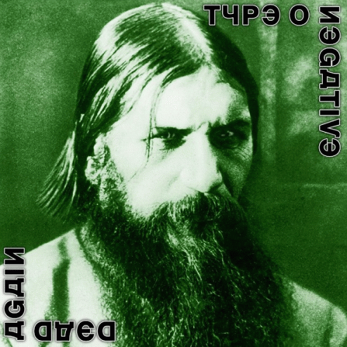

Historia
Type O Negative fue una banda de Brooklyn, Nueva York, formada en 1989.
Es conocido como uno de los primeros grupos estadounidenses en fusionar
el Dark Metal con Doom Metal junto a influencias de Rock Gótico y Deadrock,
con un sonido caracterizado por guitarras y bajos distorsionados, riffs
graves, órgano y sintetizador, más la voz de Peter Steele, cantante, bajista
y líder.
La banda mostró asimismo una variedad de influencias no "góticas" o "doom",
siendo también conocidos por su sentido del humor negro y autocrítico, a
pesar de las letras dramáticas que enfatizan en temas como sexo, romance,
depresión y muerte. Su popularidad creció en 1993 con el álbum Bloody Kisses,
el cual contiene hits underground provocativos como "Christian Woman" y
"Black No. 1". Su trabajo más reciente es Dead Again, del año 2007. La banda
se separó tras la muerte de Steele en 2010 ya que, según los otros miembros,
no tenía sentido continuar sin él.
Discografia
- Slow, Deep and Hard
- The Origin of the Feces
- Bloody Kisses
- October Rust
- World Coming Down
- Life Is Killing Me
- Dead Again
Slow, Deep and Hard
El álbum, originalmente titulado None More Negative y lanzado en 1990
bajo el nombre anterior del grupo Repulsion, lanzó la carrera de
la banda. Slow, Deep and Hard es un álbum semiautobiográfico de humor
negro con las pistas 1, 3, 4 y 7 basadas en una relación fallida del
vocalista y bajista Peter Steele. Las otras pistas del álbum son
"Der Untermensch" ( la controvertida crítica de Steele a las
personas, con frecuencia inmigrantes, que abusan del sistema de
bienestar estadounidense), "Glass Walls of Limbo (Dance Mix)"
(un paisaje sonoro industrial ambiental titulado en broma) y
"The Misinterpretation of Silence and its Disastrous Consequences"
(un minuto literal de silencio).
Según el guitarrista Kenny Hickey, Steele basó el riff principal de
Gravitational Constant: G = 6,67 10 8 cm 3 gm 1 seg 2 (más tarde
conocido como "Gravity") del tema principal de la comedia de situación
estadounidense de 1964 The Munsters. Roadrunner Records lanzó una versión
remasterizada de Slow, Deep and Hard el 24 de marzo de 2009. Para el 30
aniversario de Slow, Deep and Hard, Roadrunner Records, junto con Run
Out Groove, reeditaron el debut en vinilo.
The Origin of the Feces
El álbum se compone principalmente de versiones regrabadas y ligeramente
alteradas de pistas que ya habían aparecido en Slow, Deep y Hard.
Una canción, "Are You Afraid?", es una composición original que la banda
tocó en vivo como introducción a "Gravity", pero que nunca se incluyó en
un álbum de estudio oficial. Prefigura el sonido gótico que la banda
adoptaría en su próximo álbum, Bloody Kisses.
Este álbum también inició la tradición de Type O Negative, incluidas
versiones de canciones interpretadas en su distintivo sonido de metal
gótico. El álbum incluye versiones de "Paranoid" de Black Sabbath
(que a la mitad contiene el riff principal de "Iron Man" de Black Sabbath)
y "Hey Joe" de Billy Roberts, que ha sido rebautizado como "Hey Pete" para
el líder Peter Steele. . La repetición de "Kill You Tonight" tiene una
muestra de la última huelga de piano de "A Day in the Life" de The Beatles.
En otro ejemplo del sentido del humor de la banda, se acredita al empresario
circense PT Barnum como productor del disco, a pesar de que llevaba muerto
más de 100 años cuando se lanzó el álbum.
Bloody Kisses
Considerado un álbum destacado en el género del metal gótico, Bloody
Kisses está "saturado con patrones de sonido complejos" con contenido
relacionado con el humor.
Bloody Kisses tiene una versión de la canción de Seals & Crofts " Summer
Breeze ". Originalmente, la versión de Type O Negative se iba a llamar
"Summer Girl" con una letra diferente, pero hicieron una versión normal
después de que Seals & Crofts encontrara desagradable la letra de "Summer
Girl". Según Decibel , Bloody Kisses "presentaba épicas doom-pop
infecciosas (" Black No. 1 ", " Christian Woman "), diatribas sarcásticas
("Kill All the White People", "We Hate Everyone")" y "interludios de ruido
extraño ("Fay Wray Come Out and Play", " El lado oscuro del útero", "3.0.IF")".
" Black No. 1es "una oda sarcástica a las chicas góticas (el título proviene
de un tono de tinte para el cabello) basada en una ex novia narcisista del
cantante Peter Steele ".
October Rust
October Rust es el cuarto álbum de estudio de Type O Negative. Fue lanzado
en 1996. Este es el primer álbum con Johnny Kelly acreditado como el
baterista de la banda, aunque en el álbum se utilizan tambores programados.
October Rust tiene más baladas y menos del sonido doom metal de álbumes
anteriores o posteriores. También presenta una versión mucho más pesada de
"Cinnamon Girl" de Neil Young.
Es el primero de los álbumes de la banda con una "introducción de broma";
en este caso, "Bad Ground", que son 38 segundos de zumbido de bajo nivel,
destinados a sonar como si los altavoces del oyente estuvieran enchufados
incorrectamente. Las pistas 2 y 15 son introducciones y finales humorísticos
de palabras habladas sin título del álbum, respectivamente. con la banda
minimizando la grabación del álbum. Otra técnica de producción empleada en
el álbum es el uso de finales muy abruptos y segues en algunas de las
canciones, que se escuchan en las pistas "Green Man", "Red Water" y
"Haunted".
World Coming Down

World Coming Down es el quinto álbum de estudio de la banda estadounidense
de gothic metal Type O Negative. Se considera el más oscuro de los
lanzamientos de la banda, ya que se escribió después de una serie de
muertes en la familia del líder Peter Steele, combinado con el deseo de
romper con los temas cargados de sexualidad de los álbumes anteriores.
También fue el primer álbum de la banda en alcanzar el Top 40 en el
Billboard 200.
Al igual que con el álbum anterior de la banda, October Rust, este álbum
también tiene una 'introducción de broma': en este caso, "Skip It", 11
segundos de ruido de banda entrecortado que suena como si el reproductor
de CD del oyente estuviera saltando. Contrariamente a la creencia común,
las versiones de casete no tenían el ruido de una cinta siendo 'comida'
por el reproductor de cintas, en realidad era lo mismo que en la versión
de CD. Sin embargo, 2019 lanzó la reedición de la caja de vinilo None More
Negative y la versión de vinilo independiente lanzada en 2020 comienza como
si el disco estuviera dañado y atascado en un surco bloqueado durante la
introducción de "White Slavery". La pista termina con el guitarrista de la
banda, Kenny Hickey, gritando "¡Imbécil!"
Life Is Killing Me
Life Is Killing Me es el sexto álbum de estudio de la banda de gothic metal
Type O Negative. Fue lanzado el 17 de junio de 2003 y fue su último álbum de
estudio lanzado a través del sello discográfico Roadrunner Records.
El título y el contenido del álbum se refieren principalmente a la
perspectiva de vida insatisfecha del líder Peter Steele y sus experiencias
con enfermedades mentales en el momento de escribir y producir, con letras
sobre problemas de relación y la enfermedad y muerte de sus padres.
El álbum alcanzó el puesto 39 en la lista Billboard 200 de EE. UU., vendió
27.000 copias en su primera semana y recibió críticas positivas de los
críticos musicales, quienes notaron un sonido más melódico en comparación
con los discos anteriores. "I Don't Wanna Be Me" fue lanzado como sencillo
promocional, para el cual se produjo un video musical.
Dead Again

Dead Again es el séptimo y último álbum de la banda estadounidense Type
O Negative, lanzado por el sello Steamhammer en 2007. En esta ocasión,
la banda usa baterías de estudio en lugar de una caja de ritmos por
primera vez desde su tercer álbum, Bloody Besos. Por lo tanto, sigue
siendo el único álbum de Type O Negative con la interpretación real de
Johnny Kelly, ya que solo fue "acreditado" como el baterista en los tres
álbumes antes de Dead Again. Con 77 minutos de duración, este es el álbum
de estudio más largo de la banda.
En su arte gráfico, el CD está saturado de referencias a la muerte y a
la familia real rusa, mostrando una fotografía del ocultista y monje
Grigori Rasputín en portada, y una imagen de las duquesas Olga, Tatiana,
María y Anastasia Nikoláyevna en contraportada.Las letras están en una
fuente cirílica falsa. La recepción de Dead Again fue principalmente
positiva y resultó en las posiciones más altas de la banda en su historia.
La canción "Halloween in Heaven" es un tributo a Dimebag Darrell, quien
fue asesinado 3 años antes del lanzamiento del álbum. Curiosamente, Peter
Steele (Peter Ratajczyk; neoyorquino y, en parte, de origen ruso), líder,
cantante y bajista de la banda, moriría tres años después, el 14 de abril
de 2010. Los demás miembros del grupo dieron por cerrada la historia de la
banda tras su deceso.
Integrantes
- Peter Steele
- Josh Silver
- Kenny Hickey
- Johnny Kelly
Peter Steele
Steele nació en Red Hook, Brooklyn, en el seno de una familia católica y
asistió a la Escuela Secundaria Edward R. Murrow ubicada en el barrio de
Midwood de Brooklyn. Su padre era de origen ruso y polaco, y su madre tenía
ascendencia irlandesa, escocesa, noruega e islandesa. Se crio en los barrios
de Bensonhurst y Brighton Beach en Brooklyn. Era el más joven de seis
hermanos, con cinco hermanas mayores. Su padre luchó en la Segunda Guerra
Mundial y más tarde trabajó en un astillero. Steele comenzó a tomar clases
de guitarra a los 12 años y pasó al bajo seis meses más tarde.
Steele trabajó para el Departamento de Parques y Recreación de la ciudad de
Nueva York hasta que comenzó a salir de gira con Type O Negative en el verano
de 1994. Estaba destinado en el Brooklyn Heights Promenade, donde su trabajo
consistía en mantenimiento de parques, conducción de vehículos (incluyendo
camiones de basura y apisonadoras), y alguna eventual promoción a supervisor
del parque. Steele consideraba sus días de trabajo para el departamento de
parques entre los más felices de su vida. Peter fue cantante desde los 17
años, cuando ya tenía una voz característicamente grave.
Josh Silver
De ascendencia judía, Josh Silver conoció a Peter Steele desde su juventud,
con quien entabló una fuerte amistad al compartir gustos musicales semejantes.
Josh y Peter formaron la banda de rock Fallout en 1979, donde Silver se
desempeñó como teclista. Sin embargo, la banda terminaría disolviéndose en
1982, produciendo sólo un sencillo en su corta vida. Josh y Peter separarían
sus caminos en los siguientes ocho años: Peter y el baterista Louie Beateaux
fundaron la banda de heavy metal Carnivore, mientras que Josh y el guitarrista
John Campos formarían Original Sin.
No es hasta 1990 cuando Peter Steele se reencuentra con Josh y le pide unirse
a su nueva banda Repulsion con el guitarrista Kenny Hickey y el baterista Sal
Abruscato. La banda pronto cambiaría de nombre a Sub Zero, pero debido a
problemas legales con otra banda que compartía el mismo nombre (y por no
arruinar el significado del tatuaje que cada uno de ellos ya se había hecho
con el logo en forma de Θ que habían escogido) pasaron a cambiar su nombre a
Type O Negative.
Kenny Hickey
En 1989, Kenny fue invitado a unirse a una nueva banda Type O Negative
después de que el exguitarrista de Carnivore Marc Piovanetti declinara
su invitación. Kenny era un amigo de la infancia del resto de la banda,
puesto que habían crecido en el mismo vecindario. Él también ha grabado
todos los álbumes de Type O Negative al igual que Peter Steele y Josh
Silver (Johnny Kelly se unió en 1994). Hickey se consideraba el más callado
de Type O Negative, tomando a menudo un segundo plano detrás de los otros
miembros en las entrevistas.
Normalmente, Kenny toca guitarras Fernandes, Monterey y Vertigo. Desde el
tour de Dead Again, toca una guitarra Schecter EX baritone con un sistema
Sustaniac Stealth Pro Sustainer. Kenny es también conocido por usar sistemas
Fernandes Sustainer. En los primeros años de Type O Negative Kenny tocaba una
Gibson Flying V.
Johnny Kelly
Johnny Kelly (Brooklyn, 9 de marzo de 1968) es un baterista estadounidense,
reconocido por su trabajo en las bandas Type O Negative, Kill Devil Hill y
Danzig. Actualmente, y tras la muerte de Frankie Banali a quien reemplazara
en varios conciertos, forma parte de Quiet Riot.
Kelly se unió a Type O Negative en 1994 para reemplazar a Sal Abruscato.
Anteriormente había sido el técnico de batería de la banda. Con esta
agrupación grabó los álbumes October Rust, World Coming Down, Life Is
Killing Me y Dead Again. Se convirtió en baterista de Danzig en 2002 y grabó
la batería del noveno álbum de la banda, Deth Red Sabaoth (2010), el álbum
de covers Skeletons (2015) y la undécima producción discográfica de la banda,
Black Laden Crown (2017).El 25 de febrero de 2011 se anunció que Kelly reemplazaría
a Will Hunt como baterista de Black Label Society durante el resto de su gira
europea. Hizo su primera actuación en vivo con la banda esa noche en La Cigale en
París, Francia. Ese mismo año se convirtió en baterista del nuevo proyecto de Sal
Abruscato, A Pale Horse Named Death. El 10 de marzo de 2014 se anunció que
Vinny Appice había dejado la agrupación Kill Devil Hill, siendo sustituido
por Kelly.